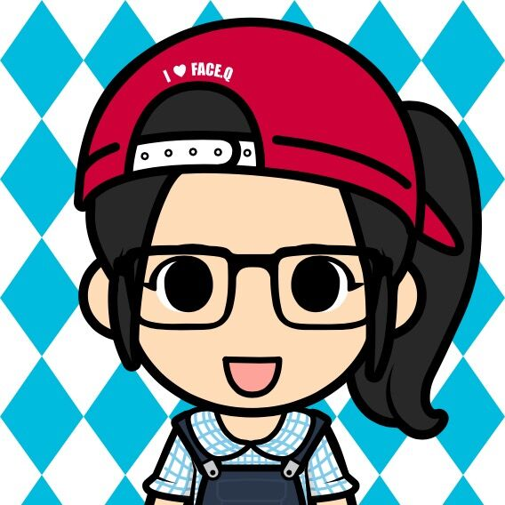

崔悦
软件工程，大三。准备入坑全栈。本来对编程十分感兴趣，不过被学校磨灭的差不多了。
我的梦想就是能够向人们卖梦想23333
会日语，在学吉他、翻唱（不过我怎么觉得鬼畜区才是安身之所）。
各种技能
技术
吃
动画
日剧
惠新宇
西安邮电大学计算机专业学生，今年大二。初学前端，对前端知识有浓厚的兴趣。
个人爱好:研究各个地域美食特色，打羽毛球，逛街，看书......
初学前端的小菜鸟，对前端充满好奇，学习了部分前端知识，感觉自己还差的很远，愿意踏上前端这条“深似海”之路！不回头!!
前端技能
HTML
CSS
Javascript
Photoshop

夏雨
西安邮电大学计算机科学与技术专业大二学生，学习前端中...
兴趣爱好:看书、打羽毛球、吃美食
现在正在学习有关前端的知识，才刚刚入门，没有什么经验，不过以后我会继续努力学习前端，争取做一个比较好的前端攻城狮！fighting！
前端技能
HTML
CSS
JScript
Photoshop

时柳
西安邮电大学计算机系网络工程专业，今年大二，对Web前端知识很感兴趣，目前正处于打地基阶段
业余爱好
吃货一枚，喜欢在街头巷尾寻找美食，吃遍小吃街
喜欢打羽毛球，一打起来酣畅淋漓，能忘记所有烦恼
喜欢骑自行车旅游，梦想能骑车去任何地方
喜欢看二硕演的韩剧，喜欢迪士尼的动漫电影
专业技能
html
css
js
PS

师凡
我今年大二，电子商务专业，却不慎踏入web前端......
我梦想着能有一天，挎上背包，环游世界，去体验不一样的人生......
我想在我青春的岁月里，能拥有一些技能，我选择了前端，希望我能坚持学下去......
前端技能
HTML
CSS
JScript
Photoshop